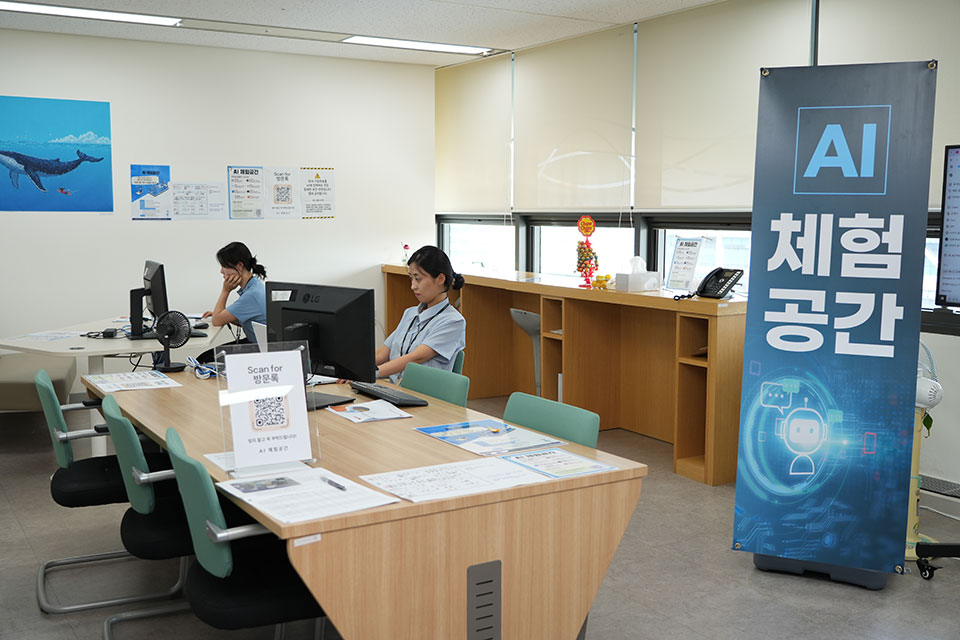
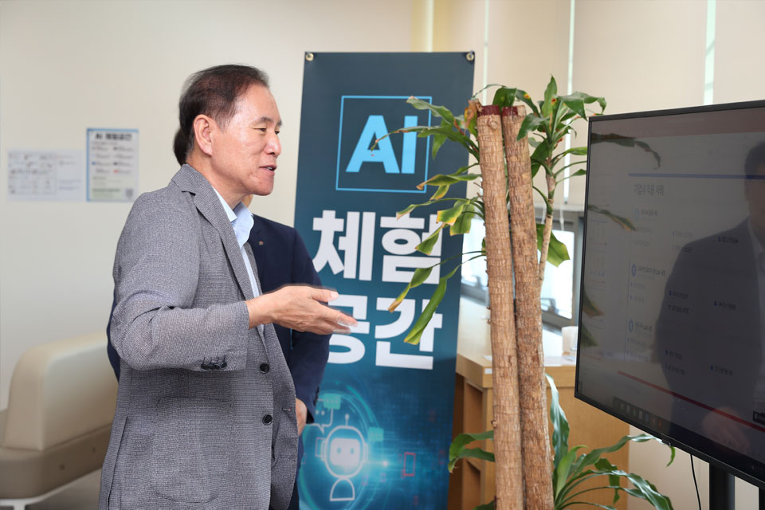
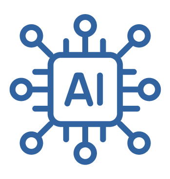
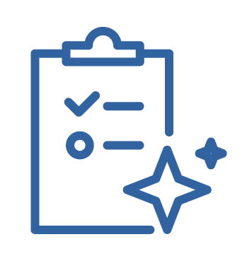
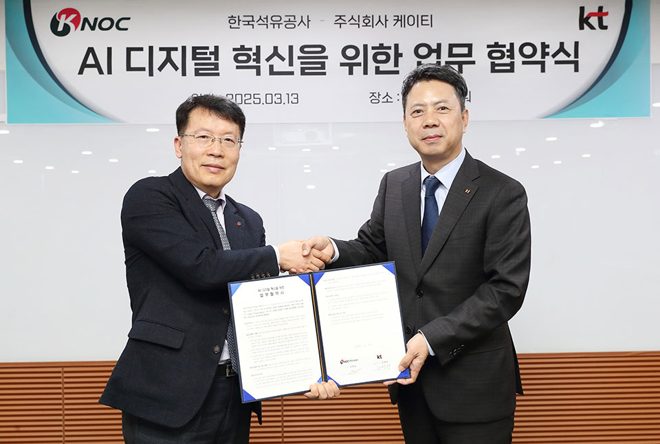
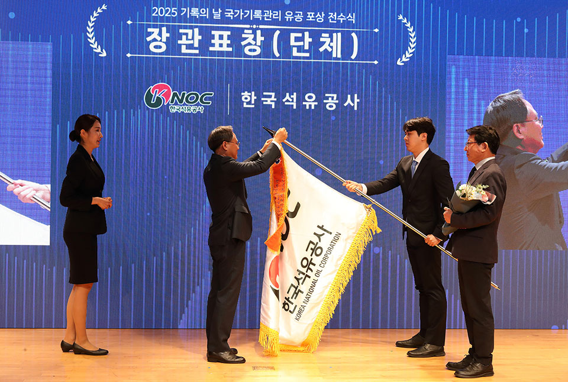

공사 경영지원본부 내, ‘AI디지털혁신단’이 신설됐다. AI디지털혁신단은, AI 대전환 추세에 부응하기 위해 AI 기획 및 실행, 데이터 활용, 디지털 혁신을 총괄하는 컨트롤 타워로서의 역할을 수행하게 된다. 인공지능과 데이터를 기반으로 한 공사의 AI 추진 전략 실행력을 강화하기 위해 구성되었다. AI디지털혁신단 신설의 의미와 이에 따른 공사의 향후 계획을 살펴본다.
2년 전부터 “AI for Energy, Energy for AI” 슬로건 아래 기술 적극 활용
공사에서는 약 2년 전부터 “AI for Energy, Energy for AI”라는 슬로건 하에 인공지능 기술을 적극적으로 활용해 왔다. AI 기술 융합을 통해 고전적인 석유개발 기술의 한계를 극복하고, 신기술의 동향을 파악해 공사의 업무 환경에 적용하는 등 디지털 전환 과제를 발굴해 구현하는 데 주력해 왔다.


그동안 머신러닝, 즉 기계학습을 통해 지질 데이터를 분석하고, AI
CCTV를 활용해 석유비축기지를 방호하는 등 다양한 업무 분야에 AI를
적용해 왔으며, 전 직원의 AI 활용 역량을 높이고자 다양한 사내
교육프로그램을 실시하고 사내 데이터 분석 경진대회를 개최해 AI의
실무 적용사례를 공유한 바 있다.
더불어, AI 기반 체질 혁신을 위해 사내에 마련된 AI 체험 공간은
올해 말까지 운영되는데, 최신 AI 툴을 통해 누구나 심층 정보를
검색하고 기획안 작성까지 손쉽게 처리할 수 있다는 장점이 있어
직원들 사이에서 큰 인기를 누리고 있다.
본격적인 AI 추진을 위한 AI디지털혁신단 신설
AI를 통해 일하는 방식은 물론 기업의 체질을 바꾸며 미래를 위한
준비를 해 나가고 있는 공사. 공사는 보다 본격적인 AI 활용을
추진하기 위해 ‘AI디지털혁신단’을 신설했다.
공사가 AI를 추진하기 위한 비전은
“AI와 데이터를 기반으로 새로운 가치를 창출하는 스마트 에너지
기업”
AI를 우리 업무에 어떻게 접목하고, 성공을 어떻게 측정하며, 필요한
인력과 장비, 윤리 기준과 보안 체계를 어떻게 마련할 것인가가
중요한 과제인 만큼 이러한 고민을 바탕으로 KNOC AI 추진 전략을
수립했다.

AI 거버넌스 정립
추진 체계 구축, AI 윤리 및 정보 보안 기준 수립, 리스크 관리 체계 마련
효율적 AI 운영 기반 구축
AI 인프라 고도화, 데이터 확보 및 활용 체계 정비, AI 역량 강화 교육 및 전문 인력 양성

AI 기반 업무 혁신 및 성과 창출
주요 업무의 AI 기반 자동화 및 최적화, AI 성과 측정 지표 수립 및 내재화, 조직 내 확산 가능한 모범 사례 발굴
바로 이 세 가지 추진 전략으로 공사에 주어진 과제들을 수행해 국민 생활과 직결되는 안전·행정·지속가능성 강화에 역량을 집중할 계획이다.

한국석유공사-KT, AI 디지털 혁신을 위한 업무 협약 체결 (왼쪽 공사 신용화 경영지원본부장, 오른쪽 KT 노형래 부산경남법인본부)
‘국가기록관리 유공’ 장관 표창 수상(AI를 활용한 문서 처리 자동화)
한국석유공사 AI디지털혁신단(KNOC AI Digital Innovation Center)은
단순한 신기술 도입 부서가 아닌, 공사의 AI 전략을 총괄 설계하고,
실행하는 컨트롤 타워로서의 역할을 수행하는 핵심 조직으로 앞으로
공사의 디지털 전환을 주도하게 된다.
구성원 한 명 한 명이 각자의 자리에서 AI를 이해하고, 적극적으로
활용해 진정한 스마트 에너지 기업으로 나아갈 수 있길 기대해 본다.